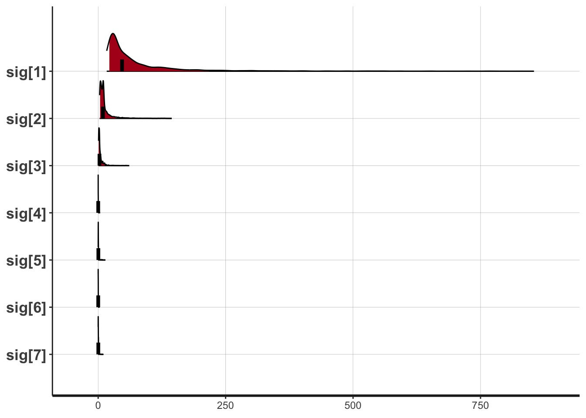

## パッケージの読み込み
library(rstan)
library(tidyverse)
## データの準備
X <- c(-27.020,3.570,8.191,9.808,9.603,9.945,10.056)
sc7 <- list(N=NROW(X),X=X)## モデルコンパイル
model <- stan_model("SevenScientist.stan")## data{
## int<lower=0> N;
## real X[N];
## }
##
## parameters{
## real mu;
## real<lower=0> sig[N];
## }
##
## model{
## for(n in 1:N){
## //likelihood
## X[n] ~ normal(mu,sig[n]);
## //prior
## sig[n] ~ inv_gamma(0.0001,0.0001);
## }
## // prior
## mu ~ normal(0,1000);
## }fit <- sampling(model,sc7,iter=3000,warmup=1000,chains=4,thin=1)## Warning: There were 1644 divergent transitions after warmup. Increasing adapt_delta above 0.8 may help. See
## http://mc-stan.org/misc/warnings.html#divergent-transitions-after-warmup## Warning: Examine the pairs() plot to diagnose sampling problems## 表示
fit## Inference for Stan model: SevenScientist.
## 4 chains, each with iter=3000; warmup=1000; thin=1;
## post-warmup draws per chain=2000, total post-warmup draws=8000.
##
## mean se_mean sd 2.5% 25% 50% 75% 97.5% n_eff Rhat
## mu 9.89 0.01 0.13 9.59 9.81 9.94 9.95 10.07 368 1.01
## sig[1] 300.82 59.67 1880.77 16.40 31.62 54.47 133.42 2133.48 993 1.00
## sig[2] 44.26 13.13 626.15 2.87 5.72 9.04 19.68 196.36 2275 1.00
## sig[3] 7.78 0.58 27.19 0.78 1.65 3.06 6.29 33.92 2193 1.00
## sig[4] 0.80 0.18 6.71 0.00 0.06 0.14 0.31 3.51 1470 1.00
## sig[5] 1.65 0.30 14.65 0.01 0.23 0.42 0.80 6.84 2315 1.00
## sig[6] 0.79 0.19 15.68 0.00 0.02 0.10 0.27 3.20 6741 1.00
## sig[7] 0.83 0.10 4.18 0.01 0.11 0.21 0.48 4.66 1617 1.00
## lp__ -4.27 0.30 2.79 -10.38 -6.00 -4.07 -2.22 0.54 84 1.05
##
## Samples were drawn using NUTS(diag_e) at Thu Feb 7 09:58:22 2019.
## For each parameter, n_eff is a crude measure of effective sample size,
## and Rhat is the potential scale reduction factor on split chains (at
## convergence, Rhat=1).## 描画
plot(fit,pars=c("sig[1]","sig[2]","sig[3]","sig[4]",
"sig[5]","sig[6]","sig[7]"),show_density=T)## ci_level: 0.8 (80% intervals)## outer_level: 0.95 (95% intervals)